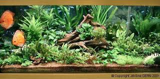
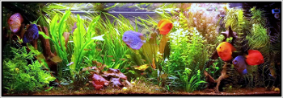

Le matériel nécessaire
La meilleure façon de débuter sans complications est d'opter pour un aquarium tout équipé. Celui-ci revient en général moins cher que l'achat séparé de tous les éléments. Un aquarium tout équipé comprend en principe :
- la cuve même et son meuble, qui doit être capable de soutenir le poids conséquent du bac une fois rempli;
- une galerie d'éclairage (avec tube fluorescent le plus souvent) et son réflecteur intégré.
- un filtre (généralement interne);
- un tube de chauffage (thermo-plongeur) et un thermomètre.
- un aérateur ("bulleur");
- un ou plusieurs sacs de gravier (et, si le bac est planté, un sac de terreau aquatique);
- un syphon, un seau et un torchon pour les changements d'eau;
- un flacon de conditionneur d'eau pour préparer l'eau du robinet;
- un test ammoniaque, nitrites et pH;
- les élements de décor éventuels : racine, pierres de lave, etc.
- une épuisette.
Il est généralement conseillé de ne pas débuter avec un aquarium trop petit, où les équilibres seront nécessairement plus précaires, les erreurs éventuelles plus conséquentes et le résultat quelquefois bien frustrant. Un aquarium d'une centaine de litres est un bon départ pour une communauté de petits poissons tropicaux.
Installer son aquarium
Placer l'aquarium sur une surface parfaitement plane et sur un meuble solide (un aquarium de 100 litres rempli, avec le décor et tous ses équipements peut facilement peser 120 kilogrammes !). Les meubles conçus pour les aquarium vous garantiront une parfaite sécurité.
Si vous désirez faire pousser des plantes, commencez par disposer le cordon chauffant en zig-zag : il facilitera la pousse des plantes en permettant aux nutriments de mieux circuler dans le substrat grâce aux courants de convection générés. Ajouter une couche de terreau aquatique de 3 à 5 cms : ce substrat permet une reprise rapide des plantes et offre un meilleur enracinement . Recouvrir la sous-couche de terreau aquatique d'une couche de gravier de granulométrie moyenne (2-3 mm) de même épaisseur environ. Si votre bac ne comportait pas de terreau aquatique, optez pour une épaisseur de gravier un peu plus large.
Placer ensuite le décor : roches, racine.Remplir ensuite l'aquarium seulement à un tiers ou à moitié. Il reste à installer et à ajuster l'équipement (filtre, tube de chauffage, thermomètre, système d'injection de CO2...) et à planter très délicatement les plantes. Finir de remplir l'aquarium jusqu'au niveau maximum, brancher les équipements et vérifier s'ils fonctionnent bien.
Nourrir les poissons
Les poissons peuvent se diviser en trois grandes catégories : les carnivores, qui se nourrissent de vers, d'insectes, de crustacés et même parfois d'autres poissons (nourriture riche en protéines et en lipides mais prises de nourriture peu fréquentes, typiquement 1 à 2 fois par jour); les omnivores, très opportunistes, qui associent nourriture carnée et végétaux (équilibre des protéines, glucides et lipides, 2 à 3 prises de nourriture par jour); les herbivores se nourrissent eux essentiellement de plantes ou d'algues mais ont besoin de beaucoup de temps pour s'alimenter (la plupart de ceux-ci auront besoin d'un supplément car les ressources d'un aquarium sont très limitées).
Dans la plupart des cas, il est intéressant voire indispensable de compléter l'alimentation des poissons avec d'autres sources de nourriture, soit à des moments particuliers (pour déclencher une reproduction par exemple), soit parce que les poissons ont besoin de compléments (végétaux ou nourriture vivante par exemple) : nourriture congelée, vivante, préparation domestique sont des choix possibles.
Une video apaisante?...
Pour retrouver cette page et d'autres